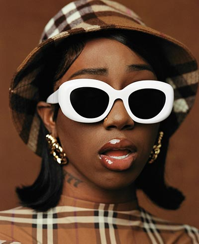

About

Wanting to change up your look for something more bold? Gafas was made for a stylish coming of age being like yourself. With over 1,000 styles of shades to pick from, you are sure to find your perfect fit. We have the latest styles from designers such as Dior, Gucci, Prada, Fendi, and more. Whether you need something big and flashy or simple and chic, Gafas has you covered.
Our gafas range from Louis Vuitton
to Carolina Herrera when it comes to matching your unique personality and
style. Our mission is to extend the life cycle of luxury. Expertly
crafted items can change hands countless times and still retain their beauty
and value. We're on a misiion to enable more people to own and appreciate
luxury while maximizing the value of their investments.
Gafas has transformed into a dynamic, global movement that stands for expertise, sustainability,
community, and service. Our experts as well as our algorithm evaluate
thousands of items daily. When you shop or sell with us, you're helping to
reduce the impact of luxury goods on the environment. In growing our brand, we've
built a network of millions that are passionate about reducing fashion's
footprint as we are. We build scalable products that provide the ultimate luxury
experience.
Combating the Fashion Footprint
- Gafas has kep 32.7+ million luxury items in circulation since 2011
- Gafas has saved 3.7 billion liters of water
- Gafas has saved 70,000 metric tons of carbon
- Approximately 40% of our consignors say environmental impact or extending the life cycle of luxury are key motivators for selling
- Approximately 40% of customers say they shop at Gafas as a replacement for fast fashion
Need to contact us directly?
Email us at gafas@gafas.com or visit HQ at
Gafas P.O. BOX 505000
Louisville, KY 40233-5000
Toll-free: 1-877-373-6374